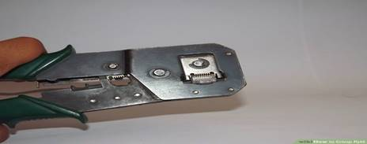

How to crimp RJ 45
Steps:
1. Purchase your cable and your RJ-45 connectors. Most ethernet cable is sold on spools of varying lengths, so you might have to measure and cut the amount you need when you get home.
2. Strip 1 to 2 inches (2.5 to 5.1 cm) of the outer skin at the end of the cable wire by making a shallow cut in the skin with a utility knife. Run the knife around the cable, and the jacket should slide off easily. There will be 4 pairs of twisted wires exposed, each of them a different color or color combination.
Orange-white striped and solid orange
Green-white striped and solid green
Blue-white striped and solid blue
color:#545454'>Brown-white striped and solid brown
3. Fold each pair of wires backwards to expose the core of the cable.
4. Cut off the core and discard.
5. Straighten the twisted wires using 2 pair of tweezers. Grasp a wire beneath a bend with 1 pair of tweezers, and use the other pair to gently straighten the bend. The straighter your wires, the easier your job will be.
6. Arrange the untwisted wires in a row, placing them into the position, running from right to left, in which they will go into the RJ-45 connector:
Orange with a white stripe
Orange
Green with a white stripe
Blue
Blue with a white strip
Green
Brown with a white stripe
Brown
7. Trim the untwisted wires to a suitable length by holding the RJ-45 connector next to the wires. The insulation on the cable should be just inside the bottom of the RJ-45 connector. The wires should be trimmed so that they line up evenly with the top of the RJ-45 connector.
Trim the wires in small increments, checking frequently to ensure a correct fit. It's better to cut the untwisted wires a few times than have to go back and start all over again because you trimmed off too much.
8. Insert the wires into the RJ-45 connector, making sure that they stay aligned and each color goes into its appropriate channel. Make sure that each wire goes all the way to the top of the RJ-45 connector. If you don't make these checks, you will find that your newly crimped RJ-45 connector is useless.

9. Use the crimping tool to crimp the RJ-45 connector to the cable by pressing the jacket and cable into the connector so that the wedge at the bottom of the connector is pressed into the jacket. Recrimp the cable once more to ensure proper connection.
10. Follow the instructions above to crimp an RJ-45 connector to the opposite end of the cable.
11. Use a cable tester to assure that your cable is working properly when both ends are crimped.